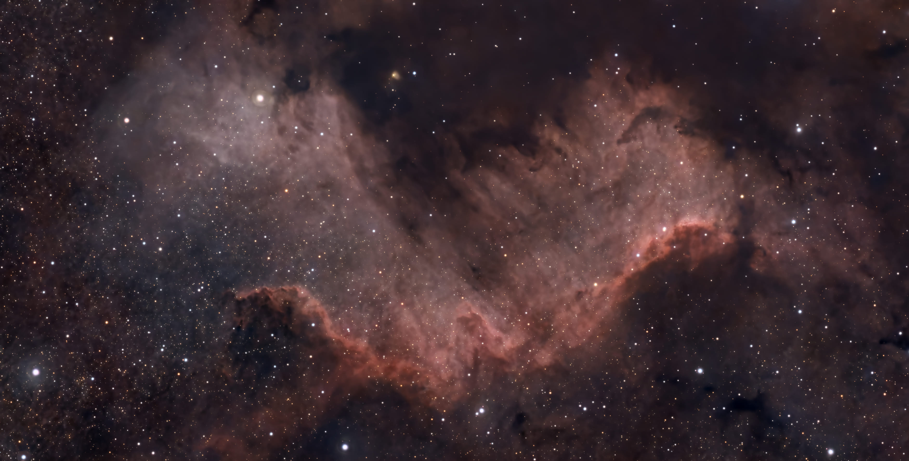

Meine Astrofotografie

NGC 7000 – Cygnus Wall


Willkommen auf meiner Astrofotografie-Seite! Hier teile ich meine schönsten Aufnahmen des Nachthimmels, die ich überwiegend im Dreiländereck Deutschland–Schweiz–Frankreich aufgenommen habe. Teilweise auch im Ausland Jedes Bild besteht aus vielen einzelnen Belichtungen, die anschließend sorgfältig bearbeitet werden, um faszinierende Details des Universums sichtbar zu machen.
📅 Datum:
📍 Ort:
🔭 Teleskop:
📷 Kamera:
⏱ Belichtung:
🔍 Brennweite: